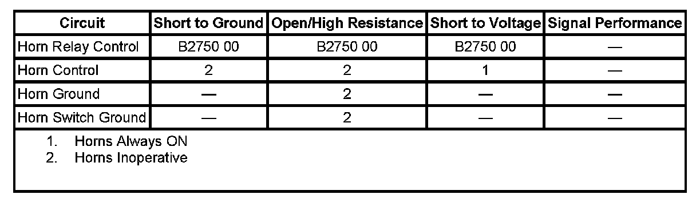

B2750
DTC B2750
DTC DESCRIPTOR
DTC B2750 00
Horn Relay Coil Circuit
DIAGNOSTIC FAULT INFORMATION

Perform the Diagnostic System Check - Vehicle prior to using this diagnostic procedure. Initial Inspection and Diagnostic Overview
CIRCUIT/SYSTEM DESCRIPTION
The body control module (BCM) controls the horn relay by grounding the control circuit of the horn relay coil energizing the relay. When the horn relay is energized, the horn relay contacts close applying voltage through the horn fuse and the horn control circuit to the horns.
CONDITIONS FOR RUNNING THE DTC
The DTC can only set only when the output is actively being requested by the BCM.
CONDITIONS FOR SETTING THE DTC
The BCM detects a short to ground, open, or short to voltage in the horn relay control circuit for approximately 125 milliseconds.
ACTION TAKEN WHEN THE DTC SETS
The BCM disables the output to the horn relay until the next ignition cycle.
CONDITIONS FOR CLEARING THE DTC
- The DTC clears when the fault is no longer detected.
- The current DTC will become history when the request for the output is removed.
- The history DTC will clear after 50 consecutive fault-free ignition cycles have occurred.
CIRCUIT/SYSTEM VERIFICATION
Ignition ON, use scan tool Horn output control to command the horn relay On. The Horn Relay Command output data parameter should display On and the horn should sound.
CIRCUIT/SYSTEM TESTING
1. Ignition OFF, disconnect the C4 harness connector at the underhood fuse block.
2. Connect a test lamp between the harness connector terminal G1and battery voltage.
3. Command the horn ON and OFF with a scan tool. The test lamp should turn ON and OFF when changing between the commanded states.
- If the test lamp is always OFF, test the horn relay control circuit for a short to voltage or an open/high resistance. If the circuit tests normal, replace the BCM.
- If the test lamp is always ON, test the horn relay control circuit for a short to ground. If the circuit tests normal, replace the BCM.
4. If all circuits/connectors test normal, replace the underhood fuse block.
REPAIR INSTRUCTIONS
Perform the Diagnostic Repair Verification after completing the diagnostic procedure.
- Underhood Electrical Center or Junction Block Replacement
- Control Module References for BCM replacement, setup, and programming Verification Tests Programming and Relearning